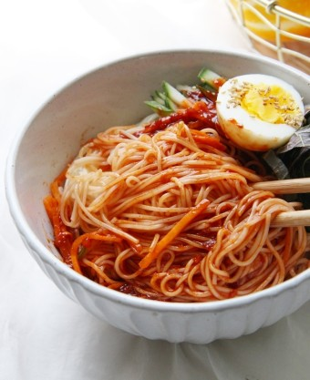

자취생을 위한 음식 레시피
홈
레시피
뒤로가기
비빔국수

재료
(1인분 기준 / *로 표기되어 있는 것은 필수 재료)
소면 1인분 *
시판 비빔장 *
오이
상추
삶은 계란 1개
1. 소면을 삶는다. 면이 익으면 찬물에 행군다.
2. 오이와 상추를 먹기 좋게 썰어둔다.
3. 삶은 면과 비빔장을 넣고 비벼준다.
4. 오이와 상추를 얹고 삶은 계란을 반으로 잘라 얹어준다.
5. 맛있게 먹는다.